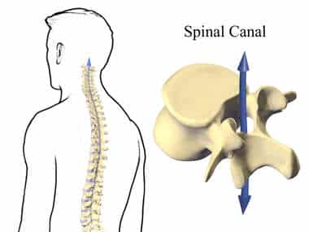
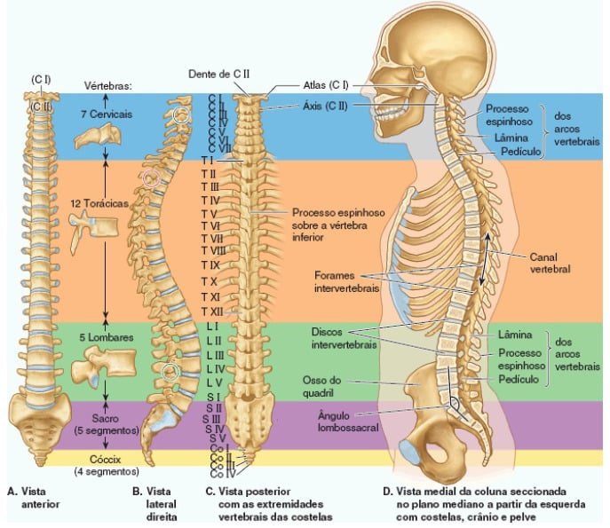
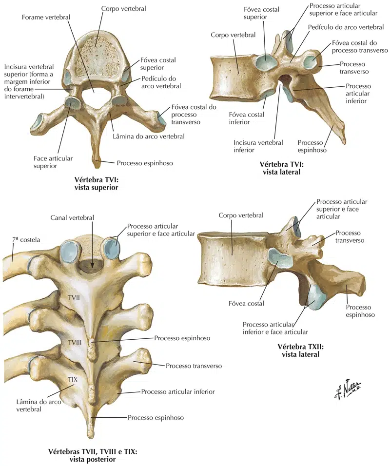
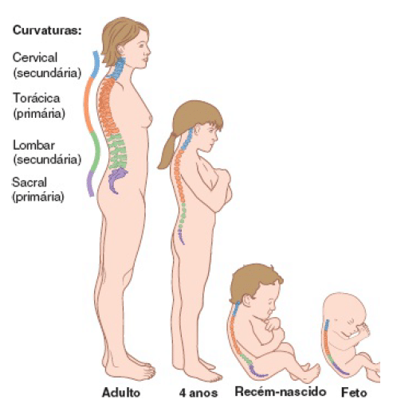

A coluna vertebral forma o esqueleto do dorso e uma das principais partes do esqueleto axial.
Esta coluna vertebral forma uma sustentação forte, mas flexível para o corpo.
As articulações entre as vértebras, ao longo de quase toda a coluna vertebral, formam pequenos espaços laterais denominados de forames intervertebrais, local este onde localizam-se os gânglios sensitivos dos nervos espinais.
O “empilhamento” destas vértebras faz com que a união dos forames vertebrais forme o canal vertebral (spinal canal na figura), túnel ósseo que abriga a medula espinal, órgão do sistema nervoso central que dá origem aos nervos.
Portanto, podemos dizer que a coluna vertebral, além de dar sustentação e movimento ao tronco, também protege a medula espinal, os gânglios sensitivos e as raízes dos nervos espinais.

NETTER: Frank H. Netter Atlas De Anatomia Humana. 7 ed. Rio de Janeiro: Elsevier, 2021.
As vértebras são os ossos que compõem a coluna vertebral dos vertebrados.
Normalmente o ser humano possui um total de 33 vértebras, incluindo nesse número as cinco que se encontram fundidas e formam o sacro, e as quatro coccígeas.
As três regiões superiores compreendem 24 vértebras e são classificadas de acordo com a zona em que se encontram em:
7 Cervicais;
12 Torácicas;
e 5 lombares.
Cada par de vértebras é separado por duas aberturas chamadas incisuras superior e inferior.
A articulação dessas vértebras forma o forame intervertebral, de onde saem os nervos espinais.

MOORE, Keith L. Anatomia orientada para a clínica. 7. ed. Rio de Janeiro: Guanabara Koogan, 2014.
Todas as vértebras, de todas as regiões (exceto a vértebra atlas) possuem as seguintes estruturas:
Corpo da vértebra;
Pedículo;
Lâmina;
Processo transverso;
Processo espinhoso;
Facetas articulares superiores e inferiores;
E forame vertebral.

NETTER: Frank H. Netter Atlas De Anatomia Humana. 7 ed. Rio de Janeiro: Elsevier, 2021.
Curvaturas da coluna vertebral
Na coluna vertebral articulada e em várias imagens usadas clinicamente, por exemplo, IRM, quatro curvaturas são normalmente visíveis no adulto.
As curvaturas torácica e sacrococcígea são côncavas anteriormente e chamadas de cifoses, enquanto que as curvaturas cervical e lombar são côncavas posteriormente e chamadas de lordoses.
A torácica e a sacrococcígea são chamadas de curvaturas primáriaspois se mantém desde o período fetal, já as curvaturas cervical e lombar são secundárias, aparecem e se consolidam somente após o nascimento.

MOORE, Keith L. Anatomia orientada para a clínica. 7. ed. Rio de Janeiro: Guanabara Koogan, 2014.